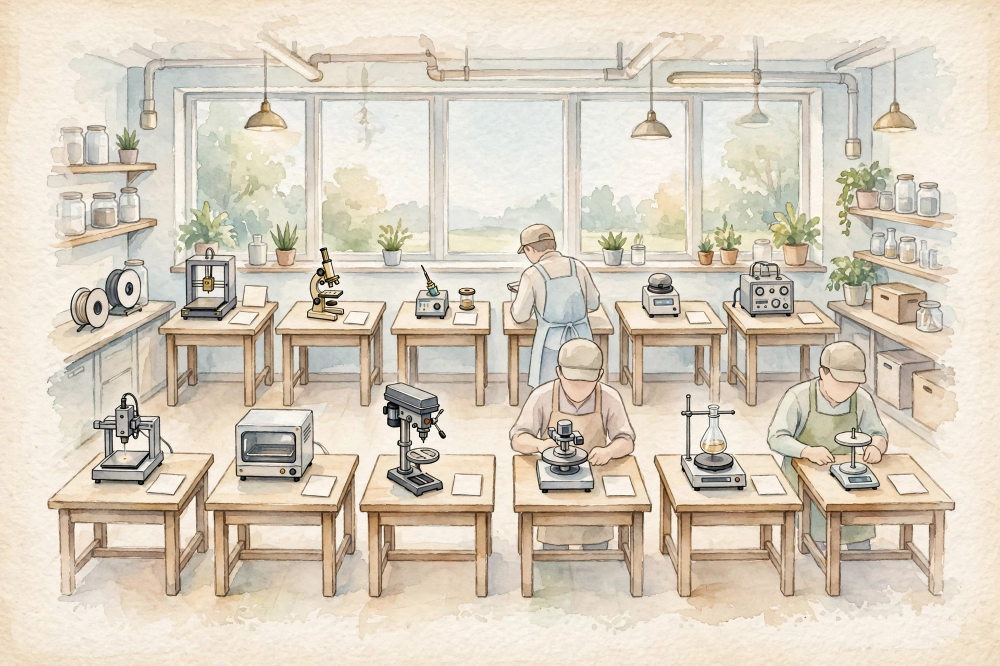

Outer layer Claim
Start here
Companion · AWS AIP-C01 study guide · Unit 08

Watercolor: Nine builds on one bench. Original AI watercolor illustration made for this page.
- Nine builds on one bench
Mechanism
Companion · AWS AIP-C01 study guide · Unit 08
Nine lab chapters turn the course lab pack into plain words: build an agent, wire a flow, route a squad, serve it, ship it, and gate the change. This companion walks each lab in source order.
Source volume-maarek-labs.html and its study file, AWS AIP-C01 study guideForm narrative companion with lesson tags and charts
SOURCE / INTERPRETATION: HOW TO READ THE TAGS
From the lesson SOURCE: the idea, and every number beside it, comes from the cited section of the source. The phrasing is the companion's.
Illustration INTERPRETATION: invented by the companion: an analogy, a toy with made-up values, or a what-if. Never source content.
companion INTERPRETATION: companion voice: the idea above the tag is from the source. The generalization below it is the companion's.
Unit 1 · How to use this volume
Numbers and limits
Volatile. Quotas, model IDs, and prices move. The prose below was checked against AWS documentation on 2026-09-28. Re-check any quota or price before exam day.
This section states no service quota. Do not memorize a number the text does not give you.
Worked scenario
Work “Start here” against one stem. Name the constraint (freshness, citation, latency, a cost ceiling, or a control that must block) and pick the smallest managed mechanism that meets every constraint.
Exam trap
Illustration INTERPRETATION: invented by the companion: an analogy, a toy with made-up values, or a what-if.